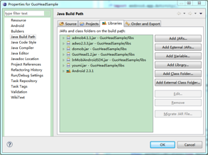
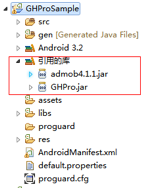
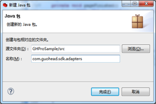
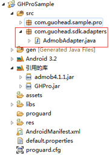

Android SDK 使用文档
本文档用于 Android 开发者在应用中整合果合移动广告 SDK。
配置果合 SDK
SDK 文件内容
文件集中包含有：
| 文件名称 | 文件内容 |
|---|---|
| Libs 文件夹 | 果合 Android SDK 和平台广告 SDK |
| Demo 文件夹 | 果合 Android SDK 程序样例 |
| Adapters 文件夹 | 广告平台 SDK 和果合提供的适配开放源码 |
| GuoHe_Integration_Android.pdf | Android SDK更新日志（本文档） |
| gh_closebutton.png | 关闭按钮图片 |
添加果合 SDK 文件到你的工程中
将文件集中的libs文件夹复制到项目工程的根目录下。打开Eclipse，右键点击项目，弹出菜单中选择“Properties(属性)”，选择左侧的“Java Build Path(Java 构建路径)”，然后选择“Libraries(库)”选项卡，点击“Add JARS...(添加JAR...)”，选择项目中的libs文件夹下的Guohe.jar，如果你需要使用平台广告，则还需要选择相应的平台广告的jar包。点击“OK(确定)”.此时项目下的"Referenced Libraries(引入的库)" 应包含Guohe.jar，以及已选择的平台广告的jar包。相关截图如下：


在您的工程代码中使用果合SDK
添加相应文件
添加 Adapter 文件
如果您只想开通品牌广告或者自主广告，请忽略此步骤。如果您想开通平台广告，则右键点击项目，选择”New（新建）“，弹出菜单中选择“Package（包）”，在“Name(名称)”中输入：com.guohead.sdk.adapters，点击“Finish（完成）”。在下载的文件集中的Adapters文件夹下找到您想要开通的平台广告对应的Adapter类，将其复制到项目的com.guohead.sdk.adapters包下。相关截图如下：


注：您也可以通过项目引用等方式引入需要的Adapter文件，该方法可以查看网上相关资料，此处不再赘述。
添加关闭按钮图片将文件集中的图片文件 gh_closebutton.png 复制到项目的drawable文件夹下。
创建广告位
用 XML 布局
在 XML 布局文件中适当位置添加如下代码创建广告位：
<com.guohead.sdk.GHView android:id="@+id/mGHView_1" android:layout_height="wrap_content" android:layout_width="wrap_content"></com.guohead.sdk.GHView>
注：果合 Android SDK 1.1版本增加了广告位关闭按钮的设置，开发着在网站上创建/编辑广告位时可以为广告位设置关闭按钮样式为“广告位内”、“右上角”、“无”。#### 用代码布局
GHView ghView_1=new GHView(this); ghView_1.setAdUnitId("果合ID"); ghView_1.startLoadAd();
将 ghView_1 添加到你想要的地方。
初始化广告位，请求广告
在 Java 文件中嵌入如下代码进行广告位的初始化：
GHView ghView_1; ... ghView_1 = (GHView) findViewById(R.id.mGHView_1); ghView_1.setAdUnitId("广告位ID");//设置广告位ID ghView_1.startLoadAd();//请求广告
注意：
- 将您在果合网站上获得到的广告位 ID，替换上述代码中的"广告位ID"。2. 该初始化广告位代码通常放在 Activity 的 onCreate() 方法中。
当界面退出时，需停止广告位请求广告，应该在 Activity 的 onDestroy() 方法中调用 destroy() 方法。代码如下：
protected void onDestroy() { // TODO Auto-generated method stub super.onDestroy(); ghView_1.destroy(); }### 设置 AndroidManifest.xml 文件
添加权限
在 AndroidManifest.xml 文件的 标签前添加如下代码。
<uses-permission android:name="android.permission.INTERNET" /> <uses-permission android:name="android.permission.READ_PHONE_STATE" />如果您需要使用平台广告，还需要根据各平台文档要求选择性地添加如下权限：
<uses-permission android:name="android.permission.ACCESS_NETWORK_STATE" /> <uses-permission android:name="android.permission.ACCESS_COARSE_LOCATION" /> <uses-permission android:name="android.permission.ACCESS_FINE_LOCATION" /> <uses-permission android:name="android.permission.READ_LOGS" /> <uses-permission android:name="android.permission.WRITE_EXTERNAL_STORAGE" /> <uses-permission android:name="android.permission.ACCESS_WIFI_STATE" /> <uses-permission android:name="android.permission.READ_EXTERNAL_STORAGE" /> <uses-permission android:name="android.permission.CALL_PHONE" /> <!--哇棒还需要下面的权限--> <uses-permission android:name="android.permission.READ_SMS" /> <uses-permission android:name="android.permission.READ_CONTACTS" />
注：若有疑问，请查看相关平台 SDK 开发文档。
添加 Activity 声明如果您只想开通品牌广告或者自主广告，请忽略此步骤。根据您想开通的平台广告，复制下面对应的 Activity 声明代码，粘贴到 标签前。
<!-- youmi begin --> <activity android:configChanges="keyboard|keyboardHidden|orientation" android:name="net.youmi.android.AdActivity" > </activity> <!-- youmi end --> <!-- domob begin --> <activity android:name="cn.domob.android.ads.DomobActivity" android:theme="@android:style/Theme.Translucent" /> <!-- domob end --> <!-- AdMob begin --> <activity android:configChanges="orientation|keyboard|keyboardHidden" android:name="com.google.ads.AdActivity" /> <!-- AdMob end --> <!-- Adwo begin --> <activity android:name="com.adwo.adsdk.AdwoAdBrowserActivity" /> <!-- Adwo end --> <!-- Inmobi begin --> <activity android:configChanges="keyboardHidden|orientation|keyboard" android:name="com.inmobi.androidsdk.IMBrowserActivity" /> <!-- Inmobi end --> <!-- BAIDU begin --> <meta-data android:name="BaiduMobAd_APP_ID" android:value="debug" /> <meta-data android:name="BaiduMobAd_APP_SEC" android:value="debug" /> <activity android:configChanges="keyboardHidden|orientation|keyboard" android:name="com.baidu.AppActivity" > </activity> <!-- BAIDU end --> <!-- vpon begin --> <activity android:configChanges="orientation|keyboardHidden|navigation|keyboard" android:label="@string/app_name" android:name="com.vpon.adon.android.WebInApp" android:screenOrientation="portrait" /> <!-- vpon end --> <!-- wooboon begin --> <activity android:configChanges="orientation|keyboardHidden" android:name="com.wooboo.adlib_android.AdActivity" /> <!-- wooboon end --> <!-- millennialmedia begin --> <activity android:configChanges="keyboardHidden|orientation|keyboard" android:name="com.millennialmedia.android.MMAdViewOverlayActivity" > </activity> <activity android:configChanges="keyboardHidden|orientation|keyboard" android:name="com.millennialmedia.android.VideoPlayer" > </activity> <!-- millennialmedia end -->## 监听广告位状态（可选）
可以根据需要对每个广告位的状态进行监听，以便做出相应的处理。果合SDK提供了完善的监听机制。果合 SDK 提供了如下监听接口： //监听广告展示前的状态。 public interface OnAdWillLoadListener { public void OnAdWillLoad(GHView m, String url); } //监听请求到广告的状态 public interface OnAdLoadedListener { public void OnAdLoaded(GHView m); } //监听广告请求失败状态 public interface OnAdFailedListener { public void OnAdFailed(GHView m); } //监听广告关闭状态 public interface OnAdClosedListener { public void OnAdClosed(GHView m); } //监听广告点击状态 public interface OnAdClickedListener { public void OnAdClicked(GHView m); }例如，如果你想要监听广告被点击事件，可以在适当位置加入如下类似代码：
ghView.setOnAdClickedListener(new OnAdClickedListener() { @Override public void OnAdClicked(GHView arg0) { Log.i("TAG","OnAdClicked"); } });监听其他状态类似，具体您可以参看 Demo 中的代码，在此不再赘述。注意：由于很多广告平台没有提供监听广告被点击的接口，所以我们的 SDK 对广告点击的统计不是很精确。## 设置自定义定向（可选）
对应 Web 端提供的自定义定向功能(参见注解)，SDK 端提供用户为广告位设置自定义定向字段的方法。只需在相应的位置添加如下代码即可，对应的 Target Key 需要开发者定义。
ghView.setKeywords("Target Key ");
自定义定向功能: 用以满足应用的特殊目标定向的需求 。用户可以在Web端为广告定义多个自定义定向字段(以逗号分隔，例如key1,key2)；在应用中，可以通过为广告位设置一个自定义定向字段(例如key1)对用户群做定向投放。规则举例: 广告A设置的自定义定向字段为key1,key2，用户群a设置的定向字段为key1，用户群b未设置定向字段，用户群c设置定向字段为key2，则a和c可以看到广告A，b则看不到。
附录：GHView 接口列表
| startLoadAd() | 开始请求广告 |
| pauseLoadAd() | 暂停请求广告，即暂停广告之间的切换。（注意：如果使用平台广告，最后显示的广告平台SDK若有自动刷新逻辑，这个广告平台将会继续刷新它自己的广告。果合SDK只暂停果合广告平台或者平台广告的切换。） |
| restartLoadAd() | 重新请求广告，即重新开始广告之间的切换。 |
| setAdUnitId("广告位ID ") | 在开始请求广告之前必须设置广告位ID才能正确请求广告。 |
| setOnxxxListener | 设置广告状态监听器，详情请看监听广告位状态。 |